Agent-centric-real-to-sim · 归档于 2026-11-04
RoboSnap
RoboSnap: One-Shot Real-to-Sim Scene Generation for Generalizable Robot Learning and Evaluation
arXivPDF Project pageCodeDROID-Sim
归档到 Agent-centric real-to-sim：把一张真实照片变成能仿真、能回放、能生成训练数据的场景，正是"真实世界 → 仿真"这条线。它是固定流水线，VLM 只负责给物体命名和判断关系，不是 agent。数据生成和 sim 评测两部分也和 Sim-robot-learning 相关。
TL;DR
- Problem
- 想从一张 RGB 照片得到一个仿真场景：看起来像现场，放进模拟器也不散架，好在里面回放真机录像、批量生成训练数据、代替真机做评测。单图重建出的物体一开 physics 就倒（10 个 DROID 场景上 Falling 0.3810–0.5900），多视角方法又要额外采集。
- Idea
- 分两层。要交互的物体和桌面做成带碰撞体的 asset，按 VLM 推出的 scene graph（谁托着谁、谁挨着谁）交替做 SDF 优化和 SAPIEN 物理沉降，直到物体落稳、又不偏离原布局。其余背景先 inpaint，再由生成式 world model 变成 Gaussian 视觉层，只负责渲染，不参与物理。
- Result
- Collision 0.0256（RoLA 0.3226），DROID 轨迹回放 5/5（RoLA 2/5）。生成的数据按 R2 混入后，10 个真机任务平均成功率 π0.5 从 32.7% 升到 41.7%，"Close the laptop" 从 50.0 升到 80.0。sim 与真机成功率的 Pearson r = 0.887（Table 1、2，Fig. 4、6）。
Problem
想用一张照片在仿真里补数据、做评测。真机 demo 少而脆，2D 增强变不出新轨迹，单图重建的场景一开 physics 就散架
Running example · 后面每个 stage 都跟着它走
Close the laptop（Task 4.2，作者实验室的 Scene 04）：桌上有 laptop、can、white bin、mug、wooden shelf。机器人是 Franka Research 3 + Robotiq 2F-85，外置和腕部各一台 RealSense D435i（Fig. 5）。手上只有这张桌子的一张 RGB 照片，加上每个任务 30 条真机 demo。
→ 想要：一个 Isaac Sim 场景。laptop 的屏幕能转动；物体放上去不倒、不穿模；从任意相机渲染都像这张桌子。然后在里面生成几千条"合上 laptop"的 demo 补进训练，并且在 sim 里评测 policy，结果要和真机一致。
→ 再扩展到 DROID 数据集：同一套流程只拿录像的一帧建场景，再把当时录下的机械臂轨迹放回去回放。
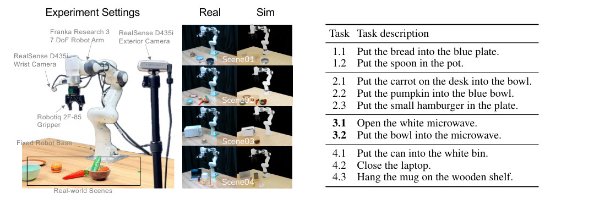
怎么读这张图
- 左 Experiment Settings：Franka Research 3 机械臂、Robotiq 2F-85 夹爪、腕部和外置各一台 RealSense D435i、固定底座。
- 中 Real / Sim：四个真机场景和它们的仿真版。最下面一行 Scene04 就是本页的例子：左边是真机，右边是 RoboSnap 场景。
- 右 Task description：Scene04 有三个任务：4.1 can 放进 white bin，4.2 Close the laptop，4.3 mug 挂到 wooden shelf。3.1、3.2 是一个长程任务的两段。
flowchart LR IN["例子输入
Scene 04 一张 RGB
+ 30 条真机 demo"] IN --> A1["Real-only
只用 30 条 demo
fine-tune π0.5"] A1 --> AX["demo 少，环境一变就掉
50.0%，相机移位后 23.3%
（Table 2、3）"]:::gap IN --> B1["2D 生成式增强
RoboEngine：分割机器人
+ 生成新背景"] B1 --> BX["轨迹还是那 30 条
53.3%（Table 5）"]:::gap IN --> C1["单图重建，不精修
SAM 3D、+FoundationPose
RoLA"] C1 --> CX["一开 physics 就倒、穿模
Falling 0.5640 / 0.5900
/ 0.3810；RoLA 回放 2/5"]:::gap IN --> D1["多视角 / 扫描重建
RialTo、Re3Sim
SplatSim…"] D1 --> DX["要多视角采集或人工精修
DROID 只有录下的帧
论文没给数字"]:::gap
推断的"坏在哪"：第 2 条，论文只给了 RoboEngine 的成功率（App A.3.5）。"轨迹还是那 30 条"是我按 RoboEngine 的做法（分割机器人、生成背景）推出来的。第 3 条的数字来自 10 个 DROID 场景的平均（Table 1）和 5 个 DROID 场景的回放（Fig. 4），论文没在 Scene 04 上跑这些 baseline。第 4 条，论文只在 §1、§2 说这类方法要额外采集或人工干预，没有做实验对比。
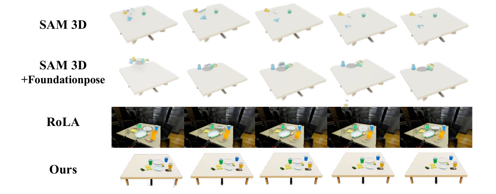
怎么读这张图
- SAM 3D 行：每个物体单独重建、单独估位姿。浅蓝色的物体在桌面上滑开，位置一直在变。
- SAM 3D + Foundationpose 行：位姿换成 FoundationPose 估计。物体挤在桌角，第 4 帧有东西掉到了桌子下面。
- RoLA 行：带真实背景的单图方法。图太小，看不清物体有没有动；Table 1 给它的 Falling 是 0.3810。
- Ours 行：五帧几乎不变，就是第 3 条路缺的"sim-ready"。
根本问题：真机 demo 少，环境一变就掉。想在仿真里补数据、做评测，场景必须同时满足两点：看起来是这张桌子，物体放上去也不倒。但单图重建的每个物体位姿是各自独立估出来的，合到一起就悬空、互相穿插；多视角方法又需要额外采集。 这篇的切入点：把场景分成两层。只有要交互的那一小块做成物理 asset，并按 scene graph 精修到落稳；剩下的背景只做一个不参与物理的 Gaussian 视觉层。
Related work
| 相关工作 | 解决什么 | 怎么解决 | 和本文的区别 |
|---|---|---|---|
| 同一问题 · 别的解法 | |||
| 单图 real-to-sim（本文所属） RoLA, Digital Cousins, CAST, GRS | 一张图 → 可仿真的场景或任务 | 单图分割 + image-to-3D，或检索相似资产（digital cousins） | 物体位姿各估各的，不管谁托着谁：RoLA 的 Falling 是 0.3810，回放 2/5；而且多半止于检索、静态重建或合成 demo → 本文按 scene graph 做 SDF–physics 交替精修，产出可复用、可回放的场景 |
| 多视角 / 扫描 real-to-sim RialTo, Re3Sim, SplatSim, Robo-GS, TwinAligner, PolaRiS | 重建真实场景的 digital twin，用来训练和评测 | 多视角采集或扫描 + 神经重建，常要人工精修 | 对齐要靠单张图以外的信息或人工 → 本文只要一张 RGB，所以能批量跑完 DROID 的 564 个场景 |
| 2D 生成式数据增强 RoboEngine, ReBot, Real2Render2Real, RoboVIP | 不采新 demo 也能扩充真机数据 | 分割机器人、生成背景 / 新视角 / 视频，或把真轨迹放进仿真重新渲染 | 不在物理场景里规划新轨迹：RoboEngine 在 4.2 上只有 53.3% → 本文在 S* 里用 cuRobo 生成新轨迹并加 6 类扰动，同样的 R2 配比下是 80.0%（Table 5） |
| 相似做法 · 别的问题 | |||
| 单物体 image-to-3D 与位姿 SAM 3D, FoundationPose, VGGT, Hunyuan3D | 一张图 → 单个物体的 mesh、6D 位姿或场景几何 | 生成式 3D 资产、前馈几何预测、位姿估计 | 只管单个物体，拼到一起会悬空、穿插（SAM 3D Falling 0.5640，+FoundationPose 0.5900）→ 本文把它们当零件，再用 scene graph 精修 |
| 程序化 / 生成式场景与仿真 benchmark RoboCasa, PhyScene, MesaTask, SIMPLER, LIBERO | 为 robot learning 造或提供可仿真的场景，并在其中评测 | 用程序规则或生成模型合成新场景；benchmark 手搭固定场景，并用 sim-real 相关性检验 | 造出的不是某个真实现场的复制品 → 本文复原 Scene 04 这类具体现场；评测沿用 SIMPLER 的 MMRV 指标（r = 0.887） |
来源：论文 §1、§2 Related Work，§4.1 的 baseline（RoLA、SAM 3D、FoundationPose），§4.2 对 ReBot、RialTo 的区分，App A.3.5（RoboEngine）。未另行检索。
Level 1 · Big picture
把场景拆成两层：物理层精修到稳，视觉层只负责像。拆完的场景能回放、能生成数据，也能当评测器
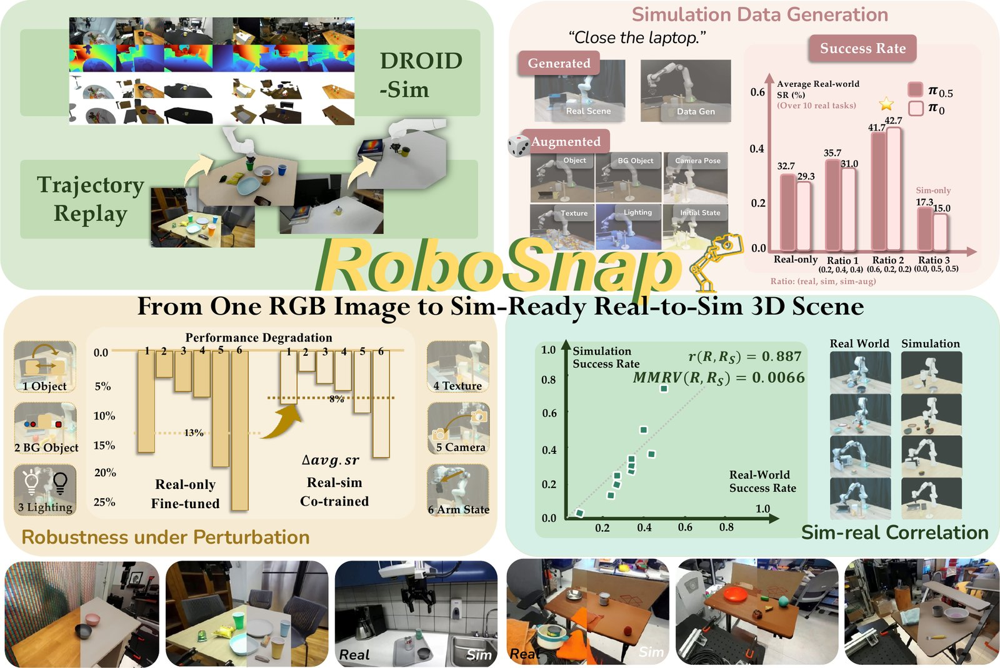
怎么读这张图
- 左上 DROID-Sim：DROID 场景的原图、深度、mask、生成的资产（Fig. 17 是放大版），一共 564 个场景。
- 左上 Trajectory Replay：把录下的机械臂轨迹放进重建场景里回放（E3）。
- 右上 Simulation Data Generation："Close the laptop." 就是本页的例子。Generated 一栏从 Real Scene 得到 Data Gen；Augmented 一栏有 Object、BG Object、Camera Pose、Texture、Lighting、Initial State 六类扰动。柱状图是 10 个真机任务的平均成功率（π0.5 / π0）：Real-only 32.7 / 29.3，Ratio 2 41.7 / 42.7（打星），只用 sim 数据的 Ratio 3 是 17.3 / 15.0（E4）。
- 左下 Robustness under Perturbation：六类真机扰动下成功率的下降，Real-only 平均 13%，co-trained 平均 8%（E5）。
- 右下 Sim-real Correlation：10 个任务的真机和仿真成功率散点，r(R, RS) = 0.887，MMRV = 0.0066（E6）。
- 最底一排：每张图左半是真实、右半是仿真（标了 Real / Sim）。
flowchart TD I["Input
Scene 04 一张 RGB"] --> P["物理层
laptop、can、mug…
SDF–physics 精修到稳"] I --> V["视觉层
黑幕布 + 房间
Gaussian，只管渲染"] P --> S["S* · sim-ready 场景
Isaac Sim 里可交互"] V --> S S --> U["用途
生成 demo：50.0→80.0%
sim 评测：r = 0.887"]
Level 2 · Stages
5 个 stage：物理层 → 世界坐标系与视觉层 → 精修 → 生成数据 → 回放与评测
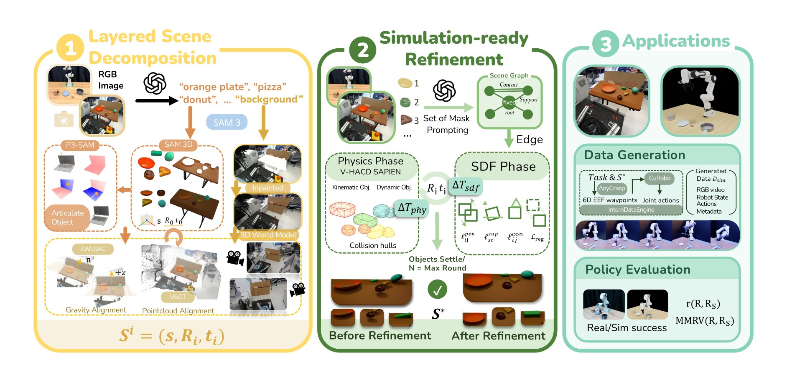
符号表（Fig. 2 和 §3 里的记号）
| 符号 | 白话 | 例子里 |
|---|---|---|
| I | 输入的那一张 RGB 照片 | Scene 04 的一张照片（论文没写用的是哪台相机） |
| ℓi, Mi, 𝓜i | 第 i 个物体的名字、2D mask、3D mesh | laptop 的名字、mask、mesh |
| V, W | V 是相机坐标系；W 是以桌面为准的世界坐标系（+z 朝上，原点在桌面中心） | W 的原点是 Scene 04 桌面的中心 |
| Si = (s, Ri, ti) | Fig. 2 ① 底部：第 i 个物体的尺度、旋转、平移 | laptop 的大小、朝向、位置（论文没给数值） |
| Tiniti→V, Tiniti→W | 物体的初始位姿，分别在相机系和世界系下 | 精修前 laptop 的位姿 |
| TB→W | 机器人底座在世界系里的位姿 | Scene 04 用相机–机器人标定得到 |
| 𝒢M | 背景的 Gaussian splat 场景 | 桌子后面的黑幕布和房间 |
| S(0), S* | 精修前 / 精修后的分层场景 | S* 就是生成数据和评测用的场景 |
| ΔTsdf, ΔTphy | Fig. 2 ②：SDF 阶段和物理阶段各自对物体位姿的修正 | 精修时 laptop 等物体位姿的小改动 |
| ℓpen, ℓsup, ℓcon, 𝓛reg | 四个 loss：穿模、支撑、接触、"别改太多" | 见 Stage 3 |
| Dsim | 生成的仿真数据：RGB 视频、机器人状态、动作、元数据 | 2,000 条生成 + 2,000 条增强的 "Close the laptop" demo |
| R, RS | N 个任务的真机 / 仿真成功率，各排成一个向量 | 4.2 这一项：真机 50.0，仿真 73.3 |
| r(R, RS), MMRV(R, RS) | Pearson 相关系数（数值是否一起涨落）；平均最大排序违例（sim 排出的任务难易顺序错了多少） | 0.887；0.0066 |
怎么读这张图
- ① 左上 RGB Image → OpenAI 图标 → "orange plate", "pizza", "donut", … "background"：VLM 看图，列出交互区里的物体名（包括支撑面），再加一个 "background"。在 Scene 04 上，这一步会列出 laptop、can、white bin、mug、wooden shelf（按 Fig. 5 的任务列表推断；论文没印出 Scene 04 的 VLM 输出）。
- ① 中 SAM 3 → SAM 3D 框：每个名字得到一个 mask，再生成一个带纹理的 mesh 和初始位姿（图中的 s、R0、t0 坐标轴）。
- ① 左 P3-SAM → Articulate Object：articulated 物体被切成部件，图里画的正好是笔记本电脑（底座和屏幕两块不同颜色）。本页要合上的 laptop 就走这条支路。
- ① 右列 Inpainted → 3D World Model：把前景（连同桌面）抹掉后补全背景，再交给生成式 world model，得到能从新视角渲染的 Gaussian 背景。摄像机图标表示新视角。
- ① 底 RANSAC（n → +z）Gravity Alignment、VGGT Pointcloud Alignment：拟合桌面平面，把法向 n 转到 +z；再用 VGGT 点云对齐每个 mesh。合起来得到每个物体的 Si = (s, Ri, ti)。
- ② 上 Set of Mask Prompting → Scene Graph（Contact、Support、fixed root）→ Edge：给 VLM 看带编号的 mask，得出谁托着谁、谁挨着谁。只托着别人的物体（桌子）是 fixed root。
- ② 中 SDF Phase（ΔTsdf，四个 loss 图标）⇄ Physics Phase（V-HACD、SAPIEN，Kinematic / Dynamic Obj.，Collision hulls，ΔTphy）：两个阶段轮流修 Ri、ti。物体落稳，或到了 N = Max Round，就停下得到 S*。最下面的 Before / After Refinement 是同一张桌子精修前后的对比。
- ③ Applications：Data Generation 一栏，Task & S* 经过 AnyGrasp 得到 6D EEF waypoints，再经 CuRobo 得到 Joint actions，整个在 InternDataEngine 里跑，输出 Dsim。Policy Evaluation 一栏，比较 Real / Sim success，算 r(R, RS) 和 MMRV。
flowchart TD S1["1 · Physical layer
laptop、can、mug…
mesh + 相机系位姿"] --> S2["2 · World frame + visual layer
桌面法向 = +z
背景 → Gaussian"] S2 --> S3["3 · Sim-ready refinement
S⁽⁰⁾ → S*：落稳、不穿模"] S3 --> S4["4 · Render + data gen
2,000 + 2,000 条 demo
真机 50.0 → 80.0%"] S3 --> S5["5 · Replay + evaluation
sim 73.3% vs 真机 50.0%
DROID 回放 5/5"] click S1 href "#stage-1" click S2 href "#stage-2" click S3 href "#stage-3" click S4 href "#stage-4" click S5 href "#stage-5"
点击 stage 展开 Level 3 细节。Stage 1–3 在 DROID 上批量自动化的做法见 DROID-Sim。
Level 3 · Details
每个 stage 的细节
Stage 1 Interactive physical layer 一张 RGB → N 个带纹理 mesh + 相机系下的位姿（articulated 的拆成部件）
- Why：机器人要碰的东西必须是一个个独立、能被移动、带碰撞体的 asset，而且位置要贴合照片里的几何。
- 命名：VLM（GPT-4 系，[51]）看图，列出交互区里的物体名 ℓi，包括支撑平台。
- 分割 + 生成：SAM 3 按名字出实例 mask Mi；SAM 3D 为每个 mask 生成带纹理的 mesh，并给出初始位姿和尺度。
- 对齐到照片几何：VGGT 从这张图预测相机几何、置信度和稠密点图（相机系 V）。对每个 mask 取高置信的前景点，和 mesh 表面采样点做由粗到细、固定尺度的 ICP。旋转或平移改得太多的更新直接拒掉，结果记为 Tiniti→V。
- Articulated 物体：P3-SAM（点云部件分割）把 mesh 切成语义部件，按部件框拆开，再挂上从 SAPIEN 关节物体数据集里检索到的类别级运动学参数（§3.1）。
flowchart TD a["VLM 列名字
laptop、can、white bin…"] --> b["SAM 3 → SAM 3D
每个物体一个 mesh"] b --> c["VGGT 点图 + ICP
mesh 贴到照片几何上"] b --> d["P3-SAM 拆部件
laptop：底座 + 屏幕
+ SAPIEN 铰链参数"]:::win c --> e["Tiniti→V
相机系下的初始位姿"] d --> e
Running example 在这一步
Scene 04 的照片 → laptop、can、white bin、mug、wooden shelf 和桌面，每个得到一个 mask 和一个 mesh，再用 ICP 贴到 VGGT 点图上。laptop 走 articulated 支路：拆成底座和屏幕、装上铰链，否则 "Close the laptop" 在 sim 里根本做不了。
论文没展示 Scene 04 的中间结果。物体名来自 Fig. 5 的任务列表，laptop 走 articulated 支路是按 §3.1 推断的。
Stage 2 World frame, robot base and visual context layer 相机系物体 + 照片 → 重力对齐的 W、机器人底座、Gaussian 背景 = 初始分层场景 S⁽⁰⁾
- Why：模拟器需要知道哪边是"下"、原点在哪；机器人要放在相对桌子正确的位置。背景太大太杂，做成物理 asset 既慢又没必要，但不画出来训练图像又不像现场：去掉背景层后，4.2 从 80.0 掉到 66.7（Table 5）。
- 世界系 W：从点图里选出支撑点，RANSAC 拟合平面，再用最小二乘精修。TV→W 把平面法向转到 +z、平面中心放到原点，物体位姿随之变到 W 下（Eq. 1）。
- 机器人底座：DROID 这种标定过的数据，直接用相机系下的底座位姿（TB→W = TV→W TB→V）。没标定的照片，按桌面几何和指定的"机器人朝向"初始化。真机部署时用相机–机器人标定（§3.3）。
- 视觉层：先 mask 掉前景，用 Gemini-2.5-flash-image 按 prompt 补全背景。prompt 要求"把桌面也去掉，只留空背景，因为交互区单独生成"（App B.1.1）。补全的图交给生成式 world model（World Labs Marble），得到 Gaussian splat 𝒢M；再用稀疏对应 + ICP 对齐到 V，最后变换到 W。
- 合起来：S⁽⁰⁾ =（每个物体的 mask、名字、mesh、W 下位姿；𝒢M 和它的位姿；W；底座 TB→W）。
flowchart TD p["RANSAC 拟合桌面
法向 → +z，中心 → 原点"] --> q["物体变到 W + 放底座
真机：相机–机器人标定"] m["mask 掉前景和桌面
Gemini 补全背景"] --> g["world model → Gaussian
Marble；对齐到 V 再到 W"]:::win q --> s["S⁽⁰⁾
物理层 + 视觉层，同一个 W"] g --> s
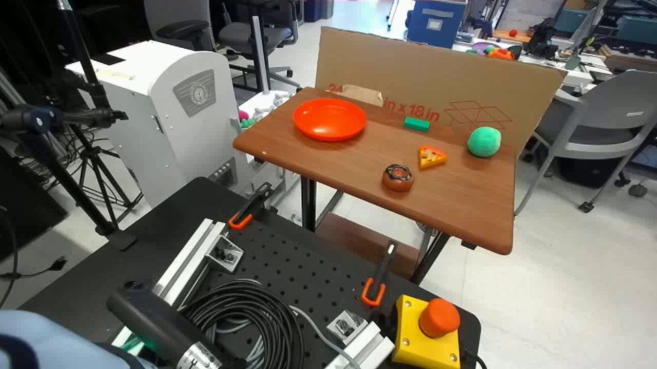
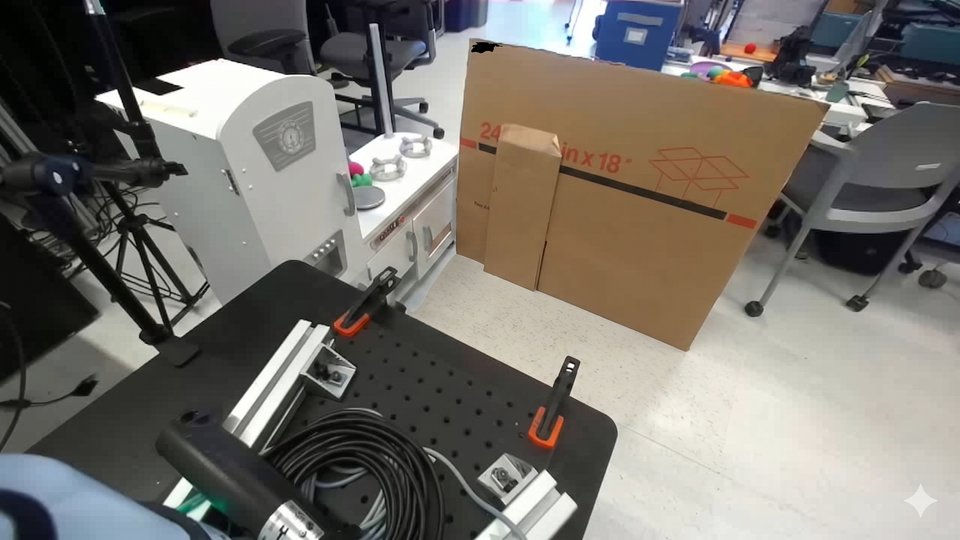
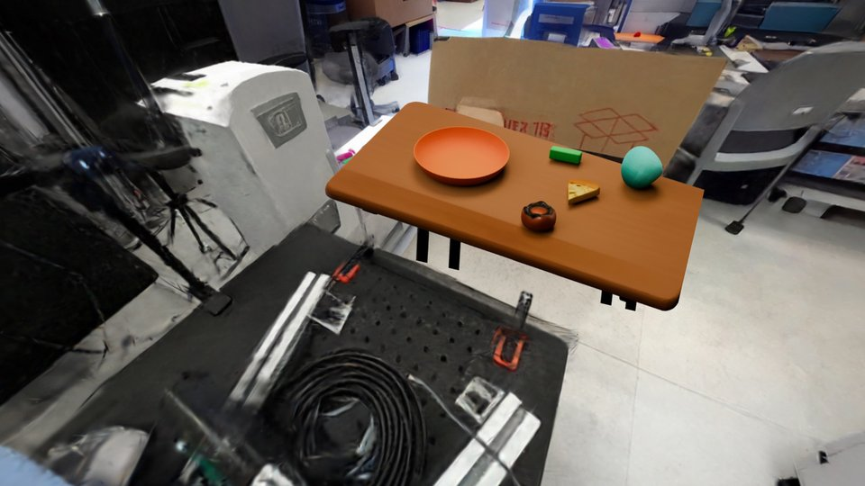
Running example 在这一步
Scene 04 的桌面 → W，桌面法向朝 +z。Franka 底座按相机–机器人标定放好。桌子后面的黑幕布和房间 → Gaussian 背景，只用来渲染外置和腕部相机的画面。
论文没单独展示 Scene 04 的背景层，这里是按 §3.1、§3.3 的流程推断的。
Stage 3 Simulation-ready refinement S⁽⁰⁾ → S*：物体落稳、不穿模，又尽量不离开原位置
- Why：每个物体的位姿是独立估出来的，合在一起常常悬空、互相穿插、接触不稳，一开重力就倒或被弹飞。不精修时 Falling 0.4320、Collision 0.2982（Table 1，w/o refinement）。
- Scene graph：做法受 CAST 启发。给 GPT-4V 看 5 张随机化的 Set-of-Mark 叠图（每个 mask 上标号），多数投票，得到有向的 Support 边（谁托着谁）和双向的 Contact 边（谁挨着谁）。只托着别人的物体是 root，固定不动。
- 只改一点：每个非 root 物体只优化一个小的刚体修正 ΔTi（旋转 Δri、平移 Δti），乘在初始位姿上（Eq. 2）。
- SDF 阶段（每轮 15 步 Adam）有四个 loss：穿模，即物体 j 的表面点落进物体 i 的 SDF 内部就罚；支撑，即被托的物体最近点贴到托它的面上，且不能穿进去；接触，即 Contact 边两端既不分开也不穿插；正则，即修正量的 ℓ2，旋转权重 λr = 5（App B.2，Eq. 4–7）。
- 物理阶段：用 V-HACD 把 mesh 分解成凸碰撞体。在 SAPIEN 里 root 设为 kinematic、其余为 dynamic，跑 200 步。前 100 步把水平速度压到接近 0、竖直速度限在 0.01 m/s，让物体在重力下慢慢落下，不被碰撞冲量弹飞。Gaussian 背景不参与。
- 循环：沉降后的位姿作为下一轮 SDF 的起点。最大位移 < 10−4 就停，最多 20 轮，最后一轮物理步数 ×5（Algorithm 1）。
- 预计算和参数：mesh 先修成 watertight，再算 128³ 的 SDF 网格（Open3D），表面取 1024 个采样点加全部顶点。SAPIEN 步长 1/100 s，统一密度 3000 kg/m³，摩擦 0.5（物体–物体）/ 5.0（物体–地面），无反弹。
flowchart TD g["Scene graph
GPT-4V × 5 次投票
桌面 = root"] --> sdf["SDF 阶段
穿模 / 支撑 / 接触 / 正则
15 步 Adam"]:::win sdf --> phy["物理阶段
SAPIEN 200 步
前 100 步锁水平速度"]:::win phy -->|"位移 ≥ 1e-4，下一轮"| sdf phy -->|"落稳或满 20 轮"| out["S*
物体落在桌上、不穿模"]
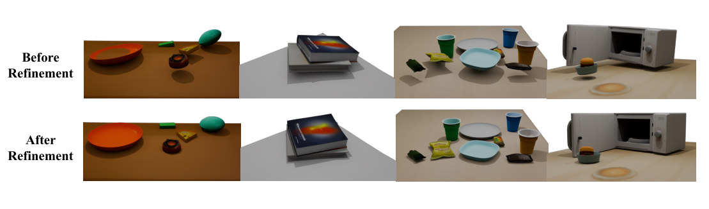
怎么读这张图
- 第 1 列（Fig. 2 的 DROID 场景）：精修前 donut 悬在桌面上方，影子和物体是分开的；精修后 donut、pizza、小球都落在桌面上。
- 第 2 列：叠放的书从错位变成叠齐。
- 第 3 列：零食袋、碗、深色袋子原本悬空（影子离得远），精修后都贴到桌面上。
- 第 4 列：装汉堡的碗原本悬在微波炉前面，精修后落到桌面上。
Running example 在这一步
桌面只托着别的物体，所以是 root，固定不动。laptop、can、white bin、mug、wooden shelf 都由桌面托着，各自只能小幅修正位姿，交替做 SDF 和物理阶段，直到落稳得到 S*。
Scene 04 的 scene graph 论文没画出来，这里是按 root 的定义推断的。
Stage 4 Layered rendering and trajectory-based data generation S* + 任务配置 → 带图像的仿真 demo（生成 + 增强）→ 和真机 demo 混合 co-train
符号表（Eq. 3：分层渲染）
| 符号 | 白话 | 例子里 |
|---|---|---|
| Q | 要渲染的那台相机 | Scene 04 的外置或腕部相机 |
| Ifg, Dfg, αfg | Isaac Sim 渲染的物理层：颜色、深度、该像素有没有前景 | laptop、mug 等物体和机械臂 |
| Ibg, Dbg | 同一相机下 Gaussian 背景的颜色和深度 | 黑幕布和房间 |
| m(u) | 像素 u 用前景还是背景：前景有东西且不比背景远，就用前景 | laptop 挡住的地方显示 laptop |
- Why：训练 VLA 要大量带图像的 demo：画面要像真机相机拍的，轨迹要在物理上可行。
- 分层渲染（Eq. 3）：对同一台相机，物理层由 Isaac Sim 渲染，背景由 Gaussian 渲染，按深度逐像素合成。
- 任务配置（App A.3.2 的 YAML）：场景 asset、franka 和恢复出的底座位姿、腕部 + 外置相机、目标物体和容器的 USD 与位姿、语言指令、技能序列（pick / place / close / open 模板）、输出 rgb、robot_state、actions、camera_params、metadata。
- 生成：在 InternDataEngine（InternData-A1 的数据引擎）里，抓取类技能用 AnyGrasp 给候选。技能输出 6D 末端 waypoint，cuRobo 把它变成无碰撞的稠密关节动作，只保存成功的 rollout。
- 作者对引擎的改动：滤掉真机上不太可能成功的 IK 抓取位姿；放置位姿和前一个位姿保持一致。8 张 RTX 4090 一天约 10,000 条轨迹。
- 增强：在 6 类扰动上均匀采样：被操作物体位移、背景物体、光照、相机位姿、机械臂初始状态、桌面纹理。
- Co-training：每个任务 2,000 条生成 + 2,000 条增强，和 30 条真机 demo 按 (real, sim, sim-aug) 的比例流式混合：R1 (0.2, 0.4, 0.4)，R2 (0.6, 0.2, 0.2)，R3 (0, 0.5, 0.5)。π0.5 和 π0 都训 15k 步、batch 16，余弦学习率、峰值 2×10−5。比例只改 mini-batch 的来源，不改步数（App A.3.1）。
flowchart TD y["任务 YAML
target = laptop
skill = close 模板"] --> e["InternDataEngine
6D waypoint → cuRobo
分层渲染外置 + 腕部"] e --> d["Dsim
2,000 生成 + 2,000 增强"] d --> t["R2 混合 fine-tune π0.5
0.6 真机 : 0.2 : 0.2
真机 50.0 → 80.0%"]:::win
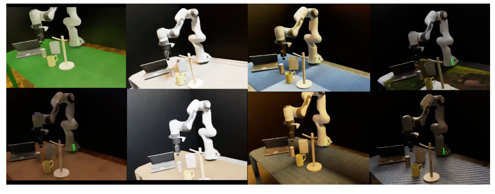
怎么读这张图
- 桌面纹理：绿色、白色、蓝色织物、深色布纹、灰色格纹等不同的桌面。
- 光照：从明亮到昏暗、偏暖都有。
- 视角和物体位置：相机角度不同；laptop、mug、wooden shelf 的相对位置也有变化。任务始终是 "Close the laptop"。
Running example 在这一步
YAML 里目标是 laptop、技能是 close 模板 → 2,000 条合上屏幕的 demo，加上 2,000 条增强 demo（Fig. 12 和上面的视频）。按 R2 和 30 条真机 demo 混合训 π0.5，真机成功率从 50.0% 升到 80.0%（Table 2，E4）。
"close" 技能模板怎么生成动作，论文没细说；AnyGrasp 只写明用于抓取类技能。
Stage 5 Trajectory replay and policy evaluation S* + 录下的轨迹或真机 policy → 回放成败；仿真成功率 RS vs 真机 R（r、MMRV）
- Why：场景好不好，最终看机器人在里面的交互和真实是否一致：录下的真轨迹能不能复现接触，真机 policy 在 sim 里的成败能不能预测真机。
- 回放（DROID）：物体按 S* 摆好，机器人按数据集的底座外参放好，开环播录下的夹爪轨迹。轨迹只用来测，不拿来调物体位姿，也不用仿真特权信息修补失败（App A.2）。
- 评测：把真机 policy 的动作直接放进 S* 闭环执行。对 N 个任务，比较真机成功率向量 R 和仿真成功率向量 RS：Pearson r 看数值是否一起涨落；MMRV（来自 SIMPLER）看任务难易的排序是否一致（§3.3）。
- 评测预算：每个任务 30 次 sim rollout。A.5 用 20 批统计显示，约 30 次以后相关性趋于稳定。
- 行为诊断（App A.5）：比较真机和仿真 rollout 的末端位移轨迹（相对起点），以及每个关节每步增量的分布。
flowchart TD r1["回放
DROID 一帧 + 录下的轨迹"] --> r2["开环播夹爪轨迹
抓到并放到目标、无穿模？"] r2 --> r3["5/5
RoLA 2/5（Fig. 4）"]:::win e1["评测
real-only π0.5 进 S*"] --> e2["每任务 30 次 rollout
4.2：sim 73.3 vs 真机 50.0"] e2 --> e3["10 个任务
r = 0.887，MMRV 0.0066"]:::win
Running example 在这一步
4.2 的 real-only π0.5 在仿真里成功 73.3%，真机是 50.0%：单个任务的绝对值差了 23.3 个点。论文的主张是跨 10 个任务的相关性（r = 0.887，E6），不是单个任务的数值相等。
扩展到 DROID：在 scene 10 的 RoboSnap 场景里，录下的轨迹抓起并放好了物体；在 RoLA 场景里失败（视频见 E3）。
Stage 1–3 at scale DROID-Sim：把 Stage 1–3 自动化跑在 564 个 DROID 场景上 DROID 原始数据 → 564 个可追溯回原始 demo 的仿真场景
- What：每个场景都链接回 DROID 的原始数据：采集地点、success / failure、日期、轨迹文件夹和元数据（App C）。
- 自动流水线：每个场景取一帧（通常是某台外置相机的第一帧），VLM 写出物体和支撑面的描述（存成
mask_prompt.txt，不用固定类别表）。然后 Grounding DINO 做文本定位，Florence-2 消解指代歧义，SAM 3 出 mask。 - 几何：SAM3D 出粗资产和初始位姿；单目深度给出带 mask 的点云，用 point-to-plane ICP 只优化旋转和平移、尺度不动。注意 §3.1 写的是 VGGT 点图 + 由粗到细的 ICP，App C 的批处理版写的是单目深度。
- 耗时：每个场景 12–25 min，5–10 个物体约 17 min，564 个场景平均 21.4 min。精修占 59%，主要花在凸分解上（Fig. 18）。
- GUI（App D）：Gradio 工具，覆盖 prompt / 点击修 mask、视频 mask 传播、多视角选帧、SAM3D 重建、GLB 拼场景、articulated 标注。
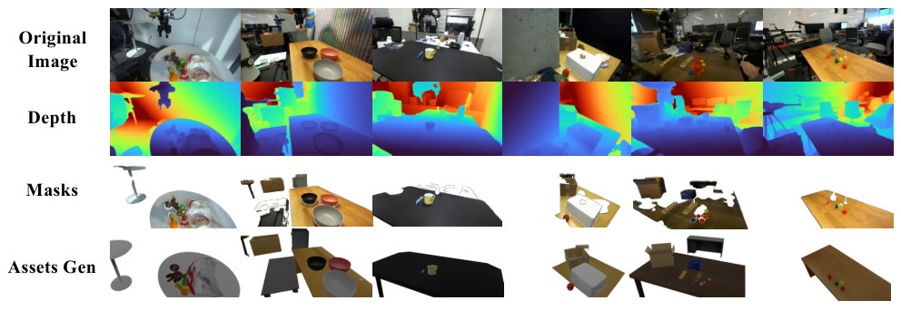
怎么读这张图
- Original Image → Depth：原帧和单目深度，冷色近、暖色远。
- Masks → Assets Gen：按 VLM 描述分出的物体和支撑面，以及生成的 3D 资产，位置和原图对应。
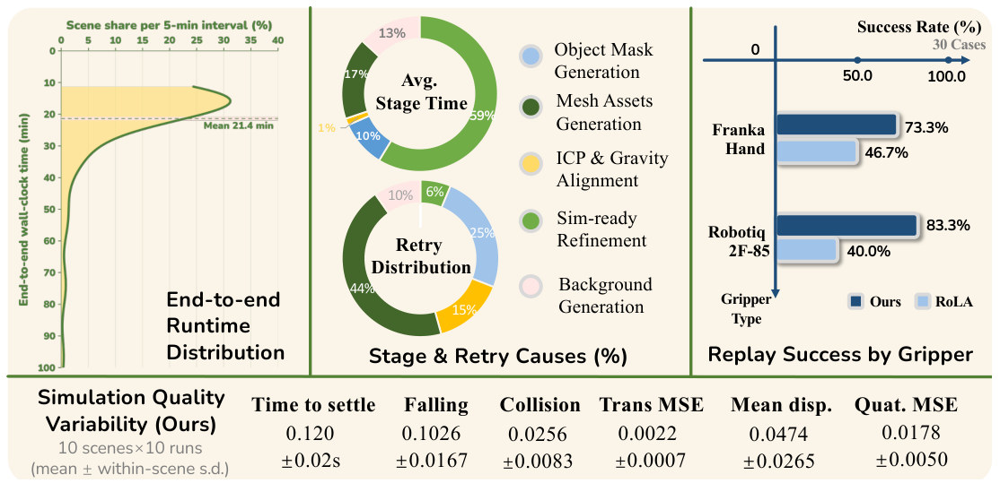
怎么读这张图
- 左 End-to-end Runtime Distribution：多数场景集中在 10–25 min，长尾一直拖到 90 min 以上，虚线是平均 21.4 min。
- 中 Avg. Stage Time：Sim-ready Refinement 59%，Mesh Assets Generation 17%，Background Generation 13%，Object Mask Generation 10%，ICP & Gravity Alignment 1%。Retry Distribution：Mesh Assets 44%，Object Mask 25%，ICP & Gravity 15%，Background 10%，Refinement 6%。论文没说 retry 是怎么触发的。
- 右 Replay Success by Gripper：30 个回放 case，Franka Hand 上 73.3% vs RoLA 46.7%，Robotiq 2F-85 上 83.3% vs 40.0%（E3）。
- 底 Simulation Quality Variability：10 个场景各跑 10 次。Time to settle 0.120 ± 0.02 s，Falling 0.1026 ± 0.0167，Collision 0.0256 ± 0.0083（E2）。
Running example 在这一步
Scene 04 是作者自己的真机场景，不在 DROID-Sim 里。论文没说它走的是自动流水线还是 GUI。
Recap：例子覆盖了论文的哪些 idea
| 论文里的 idea | 例子里在哪体现 |
|---|---|
| 分层：物理层 vs 视觉层 | Stage 1–2：laptop 等物体是物理层，黑幕布和房间是 Gaussian 背景 |
| VLM 命名 + SAM 3 + SAM 3D | Stage 1：laptop、can、white bin、mug、wooden shelf、桌面 |
| VGGT 点图 + 固定尺度 ICP | Stage 1：每个 mesh 贴到照片的几何上 |
| Articulated（P3-SAM + SAPIEN 关节参数） | Stage 1：laptop 拆成底座和屏幕、装铰链，"Close the laptop" 才做得了 |
| 重力对齐 + 机器人底座 | Stage 2：桌面法向转到 +z；Franka 底座按相机–机器人标定放 |
| inpaint + world model → Gaussian 背景 | Stage 2：去掉前景和桌面后补全背景；去掉背景层，4.2 从 80.0 掉到 66.7 |
| Scene graph（Support / Contact / root） | Stage 3：桌面是 root（推断） |
| SDF–physics 交替精修 | Stage 3：S⁽⁰⁾ → S*；Table 1 消融 |
| 分层渲染（深度合成） | Stage 4：每条 demo 的外置和腕部画面 |
| InternDataEngine + cuRobo 生成轨迹 | Stage 4：2,000 条 "Close the laptop" |
| 6 类扰动增强 | Stage 4：Fig. 12 的八张图 + 2,000 条增强 demo |
| 真机 / 仿真数据混合 co-training（R1–R3） | E4：R2 下 50.0 → 80.0 |
| 对真机扰动更鲁棒 | E5：相机移位 23.3 → 70.0，换初始姿态 13.3 → 63.3 |
| 轨迹回放检验场景保真度 | Stage 5（DROID 扩展）：5/5 vs RoLA 2/5 |
| Generative evaluation harness（r、MMRV） | Stage 5：4.2 仿真 73.3 vs 真机 50.0；10 个任务 r = 0.887 |
| DROID-Sim 数据集 + 耗时 + GUI | Stage 1–3 at scale：564 个场景，平均 21.4 min |
Results
场景比单图 baseline 稳得多、回放成功更多。在里面生成的数据能提高真机成功率和鲁棒性，sim 成功率也能预测真机
顺序同论文 §4 的五个问题：E1 像不像（Q1）→ E2 稳不稳（Q1）→ E3 能否回放（Q2）→ E4 生成数据有没有用（Q3）→ E5 鲁棒性（Q4）→ E6 能否代替真机评测（Q5）。比的都是质量和成功率，不比耗时；耗时只在 App C 里报告。
E1重建出的场景看起来像输入图吗？§4.1 · Fig. 3
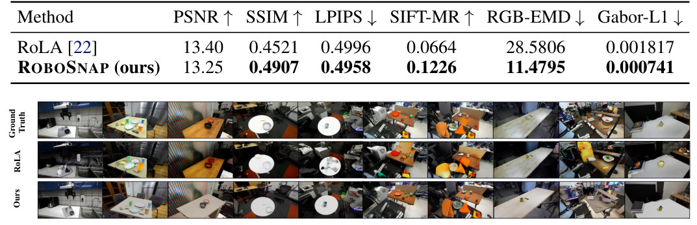
- 说明什么
- 结构、颜色、纹理更接近输入图；像素级指标基本持平。和 RoLA 比：SSIM 0.4907 vs 0.4521，SIFT-MR 0.1226 vs 0.0664，RGB-EMD 11.4795 vs 28.5806，Gabor-L1 0.000741 vs 0.001817。PSNR 13.25 反而略低于 RoLA 的 13.40，LPIPS 0.4958 vs 0.4996 几乎一样。作者的解释是：RoboSnap 重建了整个交互区，不保留大片原背景，所以 PSNR、LPIPS 只差一点。
- 在故事里
- Q1 前半：分层设计没有让画面变"假"。
- 指标
- 仿真渲染图和原 DROID 帧对比（双三次插值到同一分辨率）：PSNR、SSIM、LPIPS-Alex，SIFT 匹配率，三通道直方图的 Wasserstein 距离（表里叫 RGB-EMD），Gabor 滤波能量的 ℓ1 距离（App A.1.1）。没有成功 / 失败的判定。
- 怎么评测
- 从 DROID-Sim 里挑 10 个场景，每个 2–15 个物体，房间布局和难度各不相同。
- 只和 RoLA 比：同样是单帧输入，各用自己的分割和重建流程；在外参相机视角下渲染。
E2放进模拟器会不会散架？§4.1 · Table 1 · App A.1.2, Fig. 8
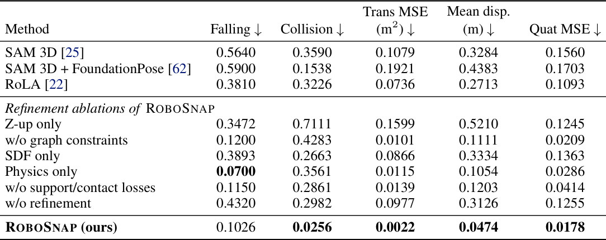
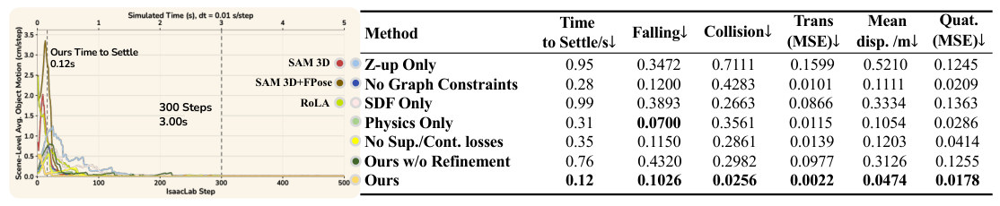
- 说明什么
- 碰撞和位姿漂移都最低，摔倒率第二低。Collision 0.0256（SAM 3D 0.3590，+FoundationPose 0.1538，RoLA 0.3226）；Mean disp. 0.0474 m（0.3284 / 0.4383 / 0.2713）；Falling 0.1026（0.5640 / 0.5900 / 0.3810）。消融里 Physics only 的 Falling 最低（0.0700），但 Collision 是 0.3561；SDF only 的 Falling 是 0.3893。两个阶段交替，才能把两项都压低。
- 在故事里
- Q1 后半：Stage 3 交替精修的直接证据，"simulation-ready" 的定义也来自这里。
- 指标
- 场景重力对齐后加载进 Isaac，在重力下跑 300 步（每步 0.01 s）。Falling：物体局部 up 轴倾斜超过 45°。Collision / pop-out：相邻采样之间中心位移超过 0.05 m，或向上跳超过 0.03 m。Trans MSE、Mean disp.、Quat MSE 都是相对初始位姿的漂移（App A.1.2）。全部越低越好。
- 怎么评测
- 和 E1 同样的 10 个 DROID 场景；每个场景重复 10 次，场景内标准差见 Fig. 18 底部。
- baseline 的重建结果直接加载、不做精修。"Z-up only"、"w/o refinement" 两行和完整方法的区别，论文正文没有说明。
E3录下的 DROID 轨迹，放回重建场景里还能成功吗？§4.2 · Fig. 4 · App A.2, Fig. 18
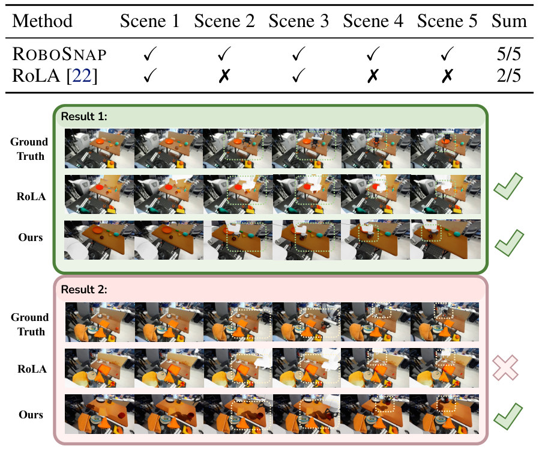
- 说明什么
- 回放成功率更高。5 个场景里 RoboSnap 5/5，RoLA 2/5。附录另跑了 30 个回放 case：Franka Hand 上 73.3% vs 46.7%，Robotiq 2F-85 上 83.3% vs 40.0%（Fig. 18 右）。
- 在故事里
- Q2：不看像素，而看"录下的真实轨迹还能不能抓到东西"，以此检验场景的几何和接触结构。
- 指标
- 夹爪抓住目标物体并移到目标区域，过程中没有严重碰撞、穿模或接触失败，就算成功（§4.2、A.2）。轨迹只用于评测，不用来优化物体位姿。
- 怎么评测
- 5 个场景取自 E1 的 10 个，挑的是两种方法都能得到稳定、可执行重建的场景。
- 只和 RoLA 比（论文说它是给定动作轨迹时也能回放的同类单图方法）；30 个 case 从哪些场景来，论文没写。
E4场景里生成的数据，能提高真机 policy 的成功率吗？§4.3 · Table 2 · App A.3, Table 4, 5
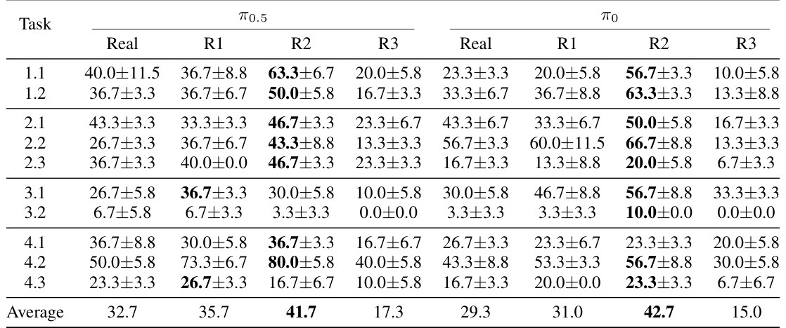
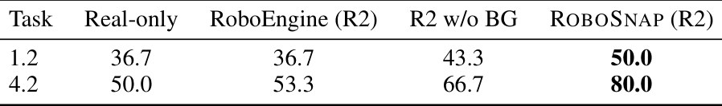
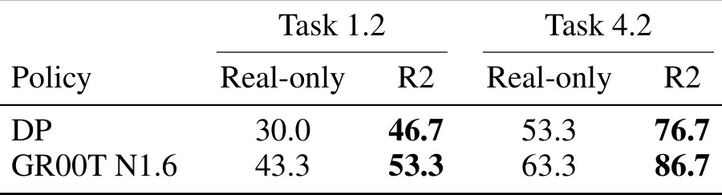
- 说明什么
- 成功率更高，R2 最好。10 个任务平均：π0.5 32.7% → 41.7%，π0 29.3% → 42.7%。例子 4.2：π0.5 50.0 → 80.0，π0 43.3 → 56.7。完全不用真机数据的 R3 仍有 17.3% / 15.0%。另外两个架构在 4.2 上：DP 53.3 → 76.7，GR00T N1.6 63.3 → 86.7。同样的 R2 配比下，RoboEngine 增强是 53.3，去掉背景层是 66.7，完整 RoboSnap 是 80.0。
- 在故事里
- Q3：场景的价值不只在像，而在能当数据基础设施，这也是论文的结论句。
- 指标
- 任务达到指令要求的完成状态，并在结束时保持稳定，才算成功；部分完成算失败；超出步数预算（2,000 步，长程任务 5,000 步）或因危险动作中止也算失败。每个设置跑 3 批 × 10 次，报均值 ± 标准误（A.3.3）。
- 怎么评测
- 4 个真机场景、10 个任务；每个任务 30 条真机 demo，外加 2,000 条生成和 2,000 条增强 demo。
- 所有配比的训练步数、batch、初始化、动作空间都相同，固定取 15k 步的 checkpoint（Fig. 11 显示 loss 在 15k 附近已平），配比只改 mini-batch 的来源。
- R2 并不是每个任务都更好：π0.5 的 4.3（23.3 → 16.7）和 3.2（6.7 → 3.3）在 R2 下反而下降；标准误最大到 ±11.5。这是我的观察。
- Table 4、5 只测了 1.2 和 4.2 两个任务。
E5换了物体位置、光照、相机、初始姿态，policy 还行吗？§4.4 · Table 3 · App A.4, Fig. 13
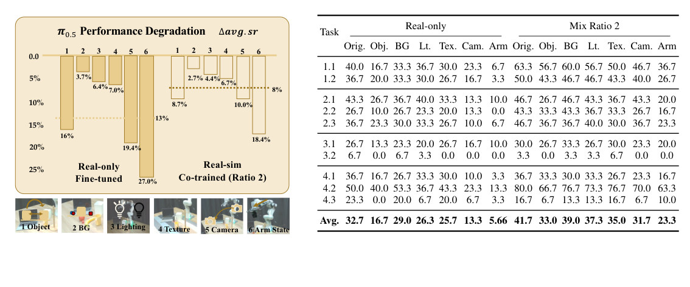
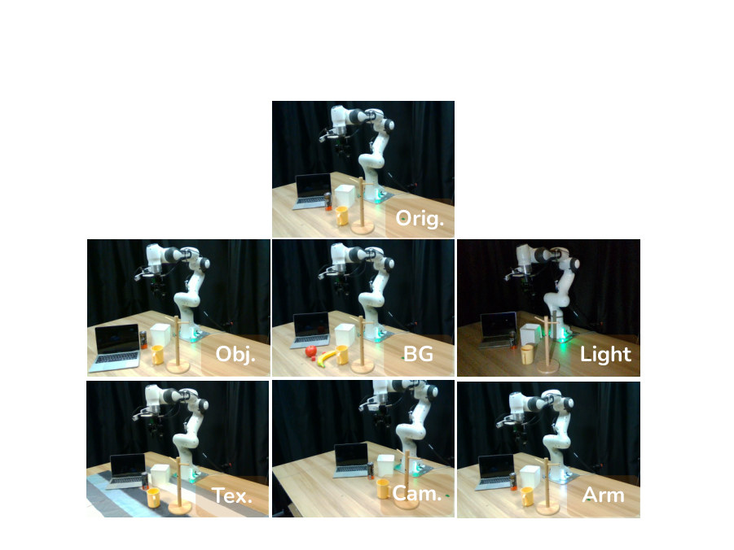
- 说明什么
- 更鲁棒：六种扰动的平均下降从 13% 降到 8%。按 Table 3 验算，这是相对原设置的成功率百分点差。最难的两种扰动：π0.5 的 Real-only 平均成功率 32.7，相机移位后 13.3，换初始姿态后 5.66；R2 平均 41.7，对应为 31.7 和 23.3。例子 4.2：Real-only 50.0 → Cam 23.3、Arm 13.3；R2 80.0 → 70.0、63.3。
- 在故事里
- Q4：仿真里便宜的受控扰动（sim-augmented 数据），换来真机上的鲁棒性。
- 指标
- 真机成功率，成功的定义同 E4；每种条件 30 次。
- 怎么评测
- 六种扰动分别单独施加：Obj. 被操作物体沿固定方向平移约 10 cm；BG 加方块和水果作干扰物；Light 关掉房间灯；Tex. 铺同一块桌布；Cam. 相机移到另一个固定位置；Arm 先把末端开到另一个固定的起始姿态。
- 只测 π0.5、R2 配比。
- 训练用的 sim-augmented 数据覆盖的正是这 6 类扰动（A.3.1），训练和测试的扰动类型一致。这是我的观察。
E6sim 里测出的成功率，能代替真机评测吗？§4.5 · Fig. 6 · App A.5, Fig. 14, 15
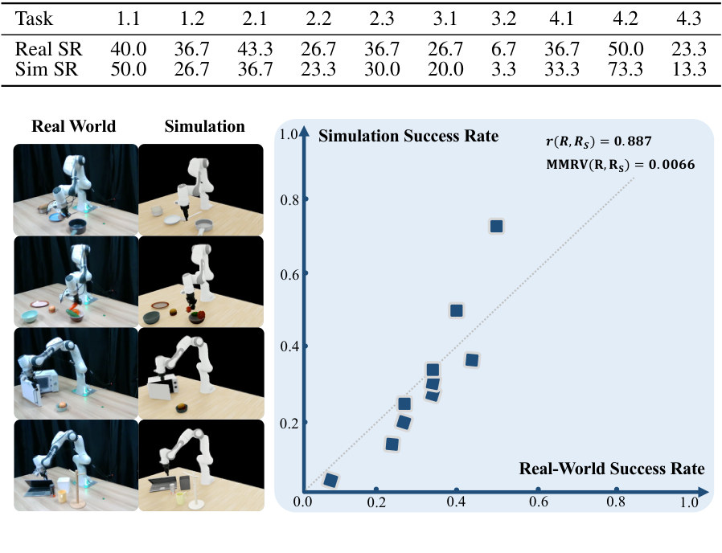
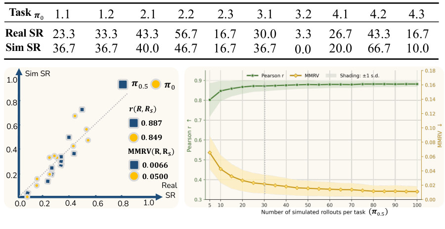
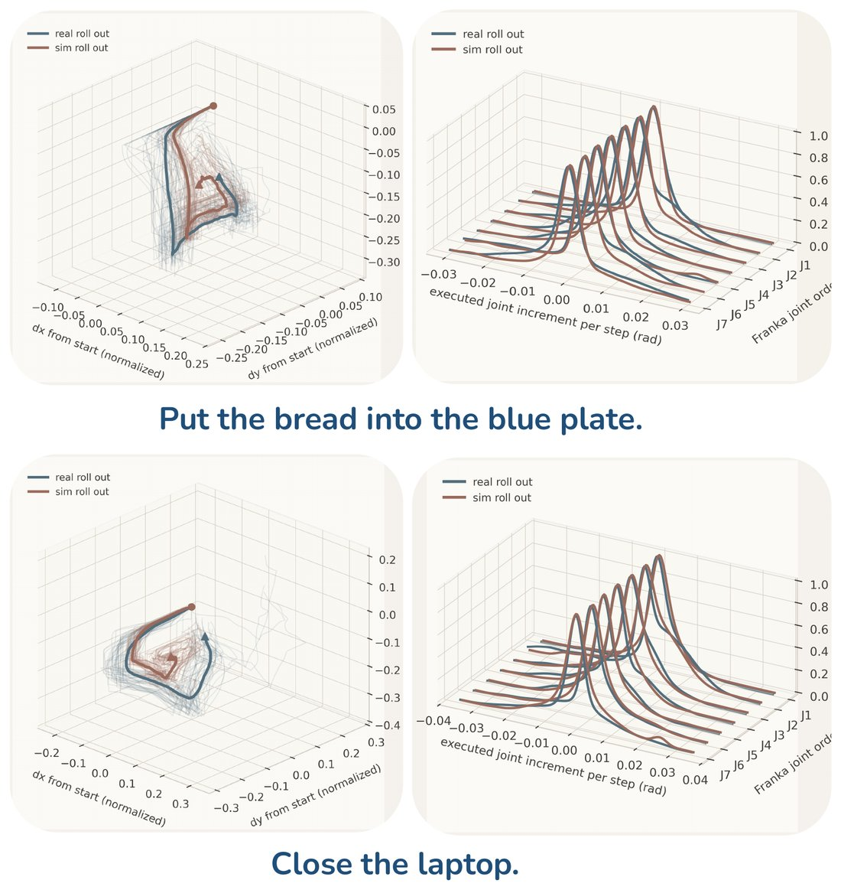
怎么读 Fig. 15
- 左图：末端相对起点的位移轨迹，蓝色是真机 rollout，红色是仿真 rollout。laptop 那组里两种颜色的线走向基本一致。
- 右图：7 个 Franka 关节每步增量的分布，一个关节一条曲线（J1–J7），真机和仿真的峰值位置和宽度相近。这是定性比较，论文没给数值指标。
- 说明什么
- sim 成功率和真机强相关，任务难易的排序几乎一致。π0.5（10 个任务）r = 0.887，MMRV = 0.0066；π0：r = 0.849，MMRV = 0.0500（Fig. 14）。但单个任务的绝对值可以差很多：4.2 真机 50.0、仿真 73.3；1.2 真机 36.7、仿真 26.7。
- 在故事里
- Q5：场景可以当 "generative evaluation harness"，用仿真代替真机评测，为 policy 的自我改进铺路。
- 指标
- R、RS 是 10 个任务的真机 / 仿真成功率向量。Pearson r 越高越好；MMRV 是平均最大排序违例，来自 SIMPLER，越低越好（§3.3）。
- 怎么评测
- 被评的是 E4 里 Real 那一列的 real-only policy，在对应的 Scene 01–04 仿真里跑。
- 每个任务 30 次仿真 rollout；A.5 用 20 批统计说明约 30 次后相关性趋稳。
- 只评了每个任务的一个 policy（10 个点），没有用多个 checkpoint 去检验"选模型"的能力。这是我的观察。
Limits
局限和开放问题
- 输入质量（§6）：单张 RGB 如果严重遮挡、光照极端、材质难辨，重建和生成 demo 的可靠性都会下降。
- 只做刚体和 articulated（§6）：可变形物体、颗粒、流体都不在范围内。
- 没有物理参数估计（§6）：摩擦和质量取自 VLM 的先验，关节参数从数据集中同类物体检索。精修阶段的 SAPIEN 则用统一的密度 3000 kg/m³、摩擦 0.5 / 5.0（App B.2）。
- 验证范围有限（§6）：只在本文的设置和模型（π0、π0.5、DP、GR00T N1.6）上验证过。真机实验全部在作者自己的 4 个场景、10 个任务上。
- 依赖闭源服务：物体命名和 scene graph 用 GPT-4 系 VLM / GPT-4V，背景补全用 Gemini-2.5-flash-image，Gaussian 背景用 World Labs Marble（§3.1、App B.1.1）。
- sim 评测只在相关性上成立：单个任务的绝对成功率可以差 23.3 个点（4.2）；回放的 5 个场景是"两种方法都能稳定重建"的子集。
- 独立复测差距大（库内交叉核对）：WorldMirror 在它自己的 DROID 场景上测 RoboSnap，得到 PSNR 10.30、LPIPS 0.641（它的 Tab. 2），比本文自报的 13.25 / 0.4958 差。两边的场景和视角设置不同，不能直接比。
For Agent-centric real-to-sim
对我们有什么用
- 分层可以直接搬进 WorldClaw：白盒场景里只把要交互的物体做成带碰撞体的 asset，背景交给 Gaussian 或 world model，只负责渲染。Eq. 3 的深度合成（前景有东西且更近就用前景）就是两层拼图的全部逻辑。去掉背景层，4.2 从 80.0 掉到 66.7（Table 5），说明背景值得保留。
- 给 real2sim-anything-indoor 加一个"落地"步骤：从视频摆好物体后，用 scene graph（Support / Contact）加 SDF 的穿模、支撑、接触 loss 和物理沉降，交替修位姿。Table 1 显示只做物理或只做 SDF 都不够（Collision 0.3561 / Falling 0.3893），交替做两项才都低。论文的物理阶段用 SAPIEN；换成 Genesis 是我的建议。
- 评测标准可借，agent 能补的地方也清楚：用"录下的轨迹能否回放成功"来检验场景，比像素指标更有区分度（PSNR 13.25 vs 13.40 几乎一样，回放 5/5 vs 2/5）；用 Pearson r + MMRV 衡量 sim 能否代替真机。但 RoboSnap 是固定流水线，出错时只能看各 stage 的 retry 占比（Fig. 18），不知道是哪个物体、哪一步错了，这正是 agentic real-to-sim（如 WorldMirror 的 judge + rewind）要补的。